Northern Tier - June 2017
Caltopo Route
The troop sent two crews to the Northern Tier base in Ely, MN, and I was lucky enough to be on one of them! I had a great time, the following report comes from the journal I kept during the trip. If it gets wordy, it's because I was really bored.
We got on the plane from SFO to Minneapolis-St. Paul at around midnight. I did manage to get an hour of shut-eye, but before long, the sun was already rising over the Minnesota clouds, illuminating the interior of the plane. Almost immediately, even the most unseasoned eye can make out the striking differences between the land in California and Minnesota. The Minnesota is a flat expanse of dark green, studded with a nearly random arrangement of lakes. On that day, there was a thin cloud layer below our cruising altitude, and we could make out the ground below through the wisps of clouds. As we descended through the cloud layer, the atmosphere immediately turned very dark. A dark band of rain separated the clouds and the horizon on one side, and on the other, the sky, or what we could see of the sky, was illuminated a striking shade of dark red, our only reminder as to the hour of day.
From the plane, the number of lakes in Minnesota is demonstrated far more prominently than from land. The name 10,000 lakes doesn’t seem like an exaggeration anymore when you fly above Minnesota. When we approached the Mississippi, there was the occasional oxbow lake, a remnant of the river’s past meandering. We landed smoothly in the MSP airport, rented out vans, and drove the 4.5 hours to the Ely base. Along the way, we stopped at a McDonald’s for breakfast.
When we arrived in the Northern Tier Ely Base, everything seemed, from a Californian’s point of view, to be an uncanny shade of green. Perhaps I am merely accustomed to the drabness of the low-lying Californian foothills. At base we met our interpreter (apparently this is Minnesota-speak for "guide"). During the afternoon at base, we received food, received equipment, planned our route, and practiced portaging canoes.
{kind=link}
At the commissary
{kind=link}
The obscene amount of food we needed
{kind=link}
Route planning
One thing I did not like was how we were only planning our route the day before we left. Being from California, where the permit system is insane, I’m used to knowing everything about my trips weeks or months before I even leave! Nevertheless, we had plenty of options to choose our route from. From Ely, you can make your route go east, west, or north. We didn’t have the permits to go into Canada, so our only choices were east and west. The main differences are obvious when you look at the map. Going east, the lakes are all smaller but more numerous, meaning a lot of short small portages. Going west, the lakes are far bigger, which means long stretches of paddling followed by long stretches of portaging that are few and far between. We chose to go east, which seemed to be a popular choice. We planned to do about 10-12 miles a day, so our final route was about 78 miles long.
Day 1:
The next morning, we woke up at 6 and packed as fast as possible. We ate breakfast and carried our canoes down to the boat landing. Carrying canoes on shoulders is actually incredibly tiring on the arms which we used for balancing the canoe on the yoke. Fortunately, it was only a couple hundred feet before we dumped the canoes onto the water and set off from base camp. Unfortunately, halfway to the Moose Lake inlet I had a terrible stomachache. I categorize my stomachaches into the following: constipation (rare), gas pressure (usually intentional), and random diarrhea in the morning (uncannily often for some reason). This stomachache did not fit into any of these, which I found extremely strange. I speculate it may have been some sort of parasite I got from drinking bad water in Yosemite a week earlier. We did not bring a filter, and I was not very mindful as to where I collected water. It was hurting pretty badly, so I sat in the middle of the canoe until it got better after maybe half an hour.
{kind=link}
Newfound Lake
After crossing into Newfound Lake, we arrived to our first portage. It took a while for us to get all the gear onto our backs so we could portage, but the trail was super short and in no time we were on Splash Lake. As we started on Splash Lake, quite an extraordinary accident occurred. One canoe pushed off from shore far too close to the stream that connects Splash Lake to Newfound Lake. They underestimated the power of the water flow, and all of them paddling at the same time wasn’t enough to stop themselves from getting sucked into the river. All three of them jumped out of the canoe, and they pulled with all their might just to get the canoe back onto the lake. Fortunately, nobody was hurt and the canoe wasn’t damaged. However, a paddle disappeared in the process, so I went downstream to look for it. It took me a while, but I found it stuck in front of a log in the middle of the river.
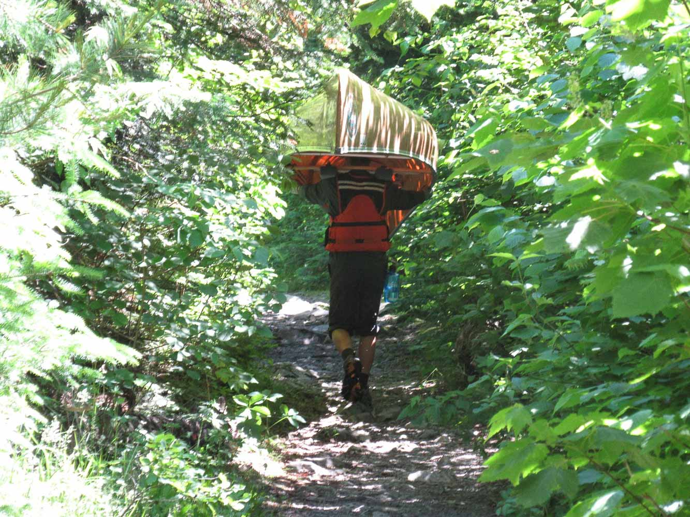
{kind=link}
First portage
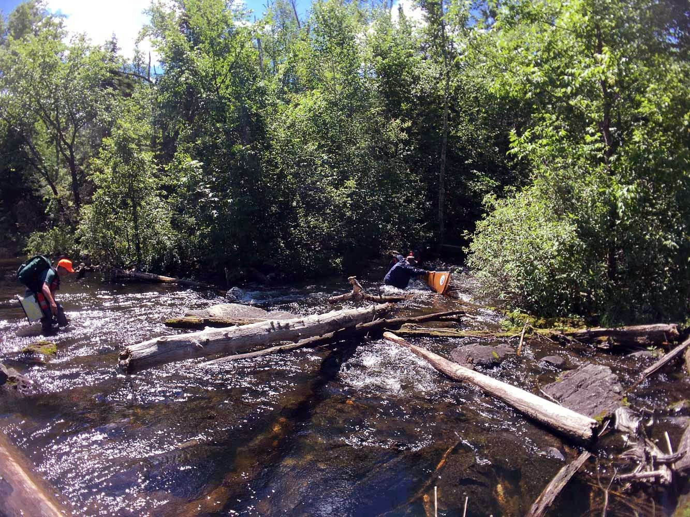
{kind=link}
The canoe floating away
We paddled across Splash Lake to our next portage. The next portage to Ensign Lake was even shorter than the first, and went without incident. On Ensign Lake, the sky was just lined with these fluffy cumulus clouds that seemed to go on forever, each consecutive cloud between slightly fainter than the one before it. Later, we ate lunch on an island on Ensign Lake. We ended up eating the last fresh food of the entire trip. On the island there happened to be a lot of crayfish swimming in the shallow water. They were brownish-red and about 4 inches long. Perhaps what was most peculiar was their unique way of swimming backwards, using their legs to propel themselves like you might do on a rowboat.
{kind=link}
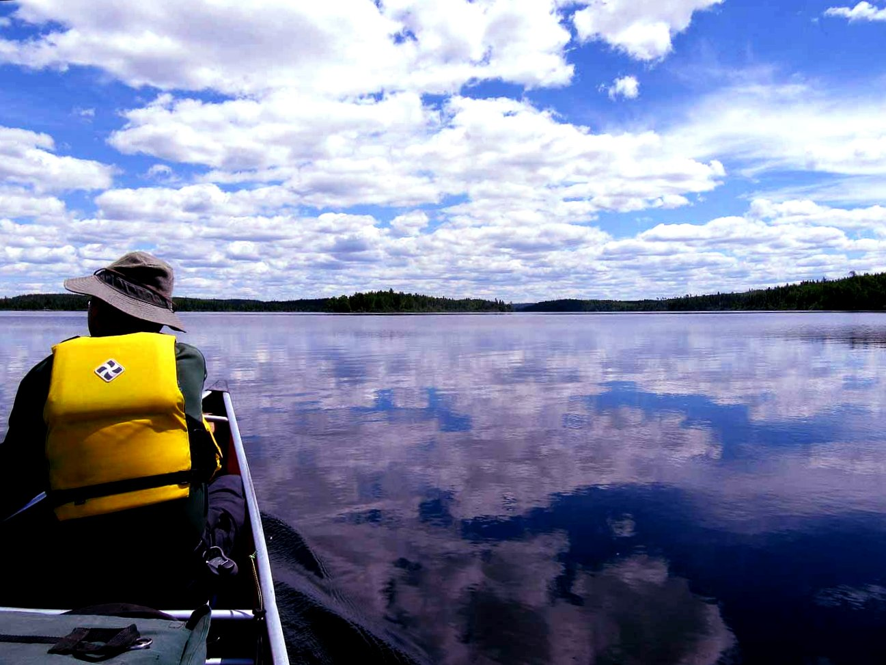
{kind=link}
Ensign Lake
Ensign Lake was incredibly long, and the next portage was particularly troublesome to find. The issue with orienteering on a lake is that it is incredibly hard to determine your position on the lake at a given time. From such a low viewpoint above the water, it is very difficult to determine whether something is an island or a shoreline. Bays and inlets are equally hard to pinpoint because the shoreline looks the exact same all around you. It’s possible to use mountains to determine position, but variable tree height can distort the shape of an already very flat topography, so flat that contour lines are spaced by 20 ft instead of the standard 40 ft. After some searching, we finally found our next portage to Ashigan Lake. We found a very nice campsite on the north shore of Ashigan Lake. It was at this point that my camera ran out of battery! (presumably because I asked my friend to take a picture and he took a video instead.)
{kind=link}
another group on Ashigan Lake
{kind=link}
fantastic campsite
Later, we made a sort of half-hearted attempt at fishing Ashigan Lake. By the time I learned how to cast and reel, it was already time to eat dinner, which was cooked by our very nice interpreter, who probably shouldn’t have been doing all the work. That night, it rained pretty heavily, but it stopped in the morning.
Day 2:
The next morning, after cleaning all our stuff up, we began our portage to Gibson Lake. This one was our longest so far at 105 rods, and would be one of the longest of the entire trek. (Each rod is 16.5 feet, one canoe length.) I was only carrying a pack (which I was quite thankful for), and I was already pooped. I imagine it was even worse for the guy carrying the canoe. When carrying the canoe over your shoulders, the weight of the canoe may be lighter than the pack, but it has the tendency to rest entirely on shoulder muscles. My knowledge of anatomy is subpar, but I am quite sure that muscles are meant to hold up loads placed on bone, not on the muscles themselves. I suppose the pain is just something you have to get used to.
On Gibson Lake we happened to bump into Troop 408, also from Cupertino, which was incredibly lucky. They were on their 8th day and were heading back to base the next day. We asked them to tell everybody at home that we were doing alright. Our next portage to Cattyman Lake was a lot shorter but came with the bonus of a very nice waterfall. Obviously, it was a pretty short waterfall compared to the waterfalls one might find in the more dramatic terrain of California, but it was a sweet respite from all the flat paddling nonetheless.
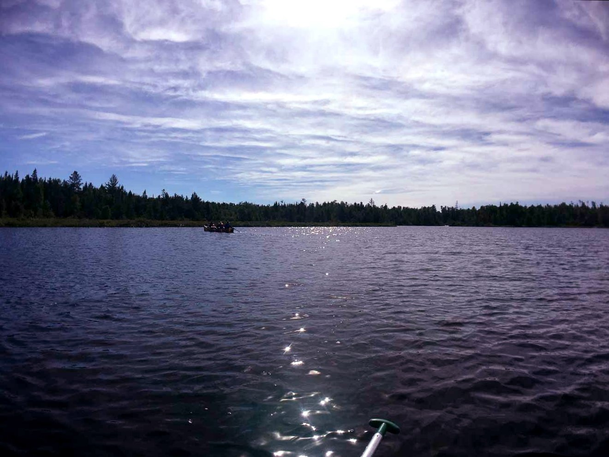
{kind=link}
Cattyman Lake
Our next lake, Jordan Lake, ended in a narrow canyon 40 ft wide and 40 ft deep. Another portage brought us to Ima Lake. On Ima Lake there was an incredible tailwind that literally blew us across the lake at jogging speed. We got to the next portage in no time at all. The next section was a long and wide stream with various portages along it. It wasn’t really a stream, more so a series of narrow ponds connected via short streams. It was quite peaceful to be there paddling through the “trail” that previous canoers had cut through the lilypads that covered the lake. When we made it to Thomas Lake we ate our lunch on a small island. We ate big sausages, hunks of cheddar cheese (our last real cheddar), and pita bread. At this point, the idea of perpetual hunger really started to sink in. But what really annoyed me was that everybody else, eating the same food, seemed to be so much more full than I was. Perhaps I really do eat too much at home.
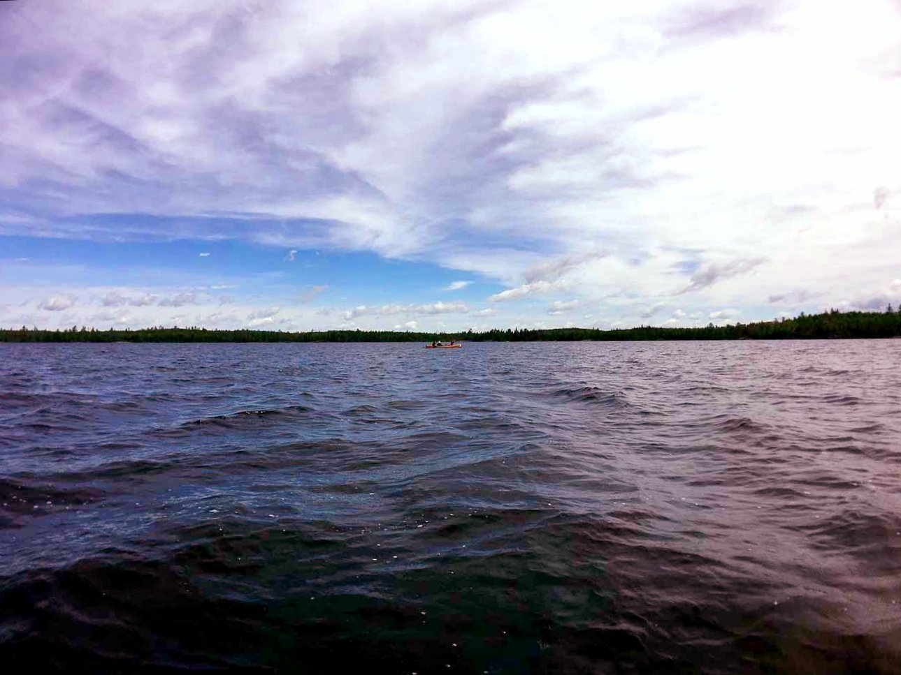
{kind=link}
Ima Lake (I'm a lake?)
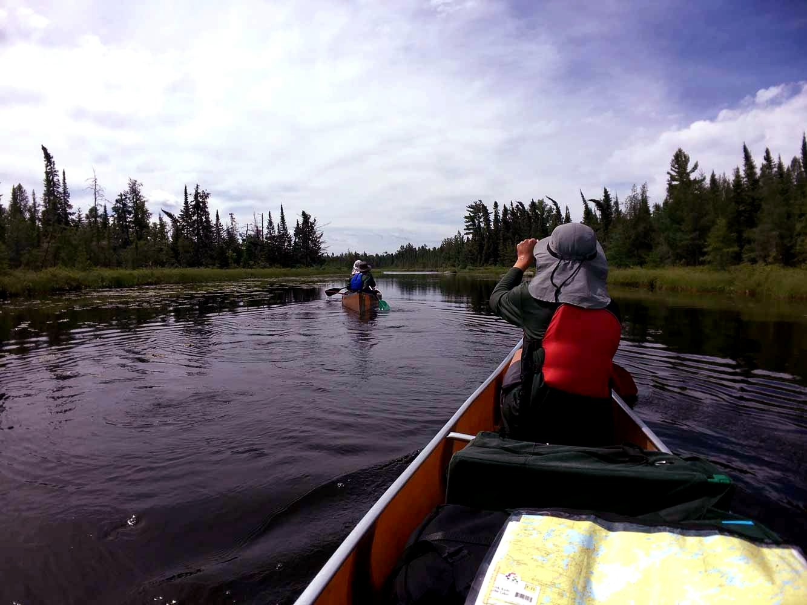
{kind=link}
Narrows from Ima to Hatchet
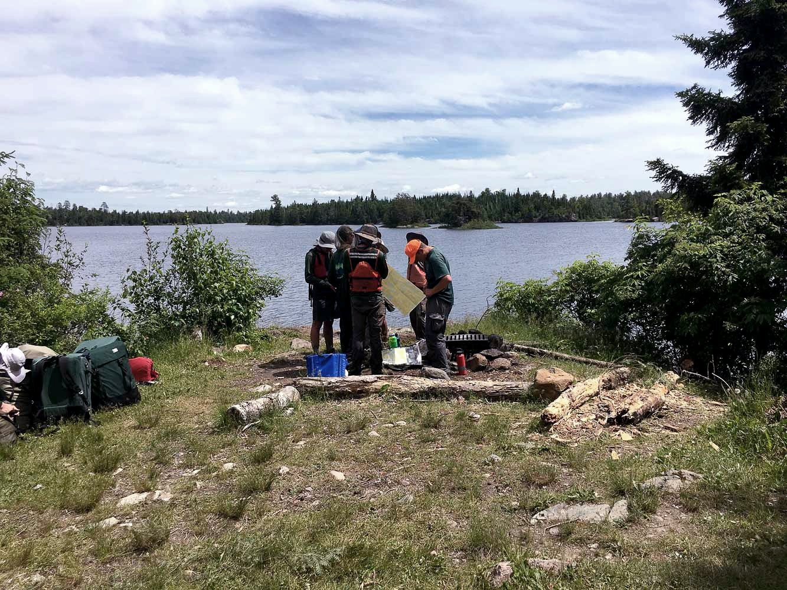
{kind=link}
On Thomas Lake
Our original plan was to go from here and camp at Insula Lake for the night, loop to Alice Lake, and go up to Kekekabik and the Scenics. Instead, we decided to go from Thomas straight to Kekekabic, skipping the Alice Lake loop. To compensate for the lost mileage, we added on another (longer) loop going from Eddy Lake to Ogishkemuncie (nice name) to Anaga Lake, then back along the border, possibly passing through the Scenics if we had time. Our crew seemed pretty excited at this change because nobody really had any idea as to why we were going to Alice Lake in the first place. Nobody wanted to do the long portages either. The, aided by a wind out of the southwest, we paddles the 5 miles to the north side of Fraser Lake to camp for the night.
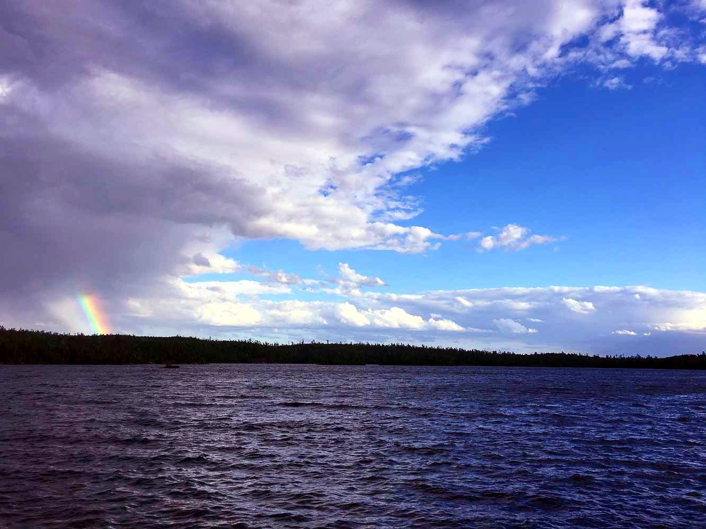
{kind=link}
Beautiful rainbow on Fraser Lake
We took out the fishing poles for a while and waded a bit offshore to cast a few lines. I’m no expert at fishing, but I can say that we took the shiny metal tackle that spins when you reel it in. I saw a small black fish but we did not catch anything (obviously?). We came back and cooked our pasta dinner, which was very good but just as unfulfilling as lunch. A small rainstorm blew in with a lot of wind, but once it blew over, it cleared into a beautiful sunset with rainbows! We took out some canoes and went fishing, but we did not catch anything once again.
Day 3:
The following morning, I woke up early to fish and ended up catching a small (4 inch) fish. I let it go, and didn’t catch anything for the rest of the trip! I don’t recall exactly what the fish looked like, but after looking at some photos of fish species, I would venture a guess and say it was a brook trout. For breakfast, we ate oatmeal, which was uncannily filling. Unfortunately, I was hungry again not much later. I continued to find if strange that I was literally the only person always hungry. Perhaps it was due to me not eating the chocolate and peanut butter bars that they gave us every morning. We took out the canoes and set off for Kekekabic Lake a few miles away.
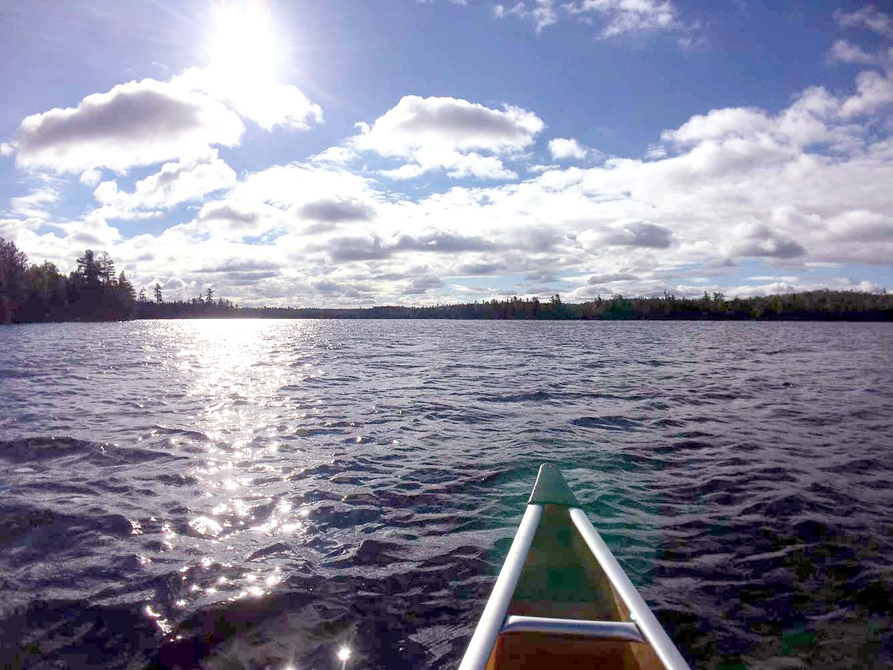
{kind=link}
Fraser Lake
The first few lakes rolled by incredibly quickly, and it seemed like we were really getting into a rhythm! Getting in and out of the water is arguably the main reason why time gets wasted on canoe trips, and the faster a crew can portage, the more efficient they will be! Getting out of Fraser Lake there was a wind out of the SW that pushed us comfortably to the next lake, Ahmacose Lake. However, the moment we got in Wisini Lake, the wind immediately started coming out of the NW. At 10 o’clock, we got to the inlet of Kekekabic Lake, which was relatively waveless, although the wind was blowing quite hard. However, Kekekabic Lake is shaped such that the inlet is connected to the main body of water via a small gap, so it’s protected from waves.
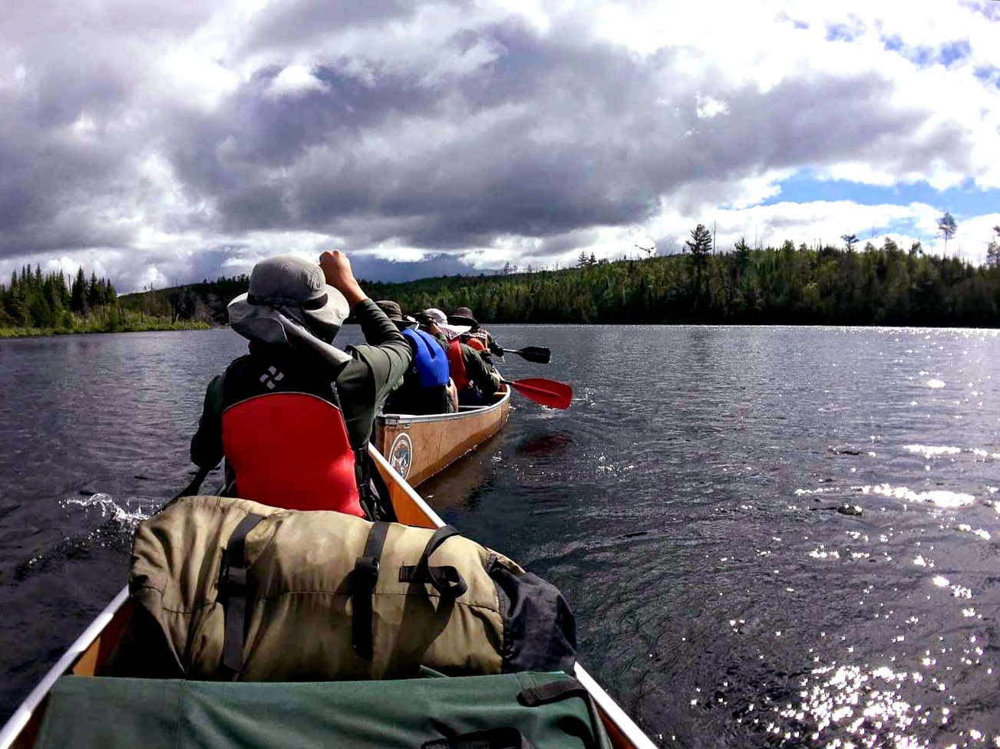
{kind=link}
The inlet of Kekekabic
Once we paddled to the main body of the lake, the waves started getting really big, and there were whitecaps on the crests. It was too risky to canoe in that weather, so we turned back and waited the wind out at the portage trail. The wind brought rain clouds over us, and it showered on and off for about half an hour as we snacked on our Pringles under the trees. The wind died down after the short storm, so we tried again. When canoeing in wind, it is very important to avoid canoeing parallel to the waves, because the tossing and turning of the waves can swamp the canoe. We had to do a small section of paddling in crosswind, and we avoided that by making a V-shape, always heading into or away from the wind.
{kind=link}
Sheltering from the wind behind an island
We stopped at a campsite to eat an early lunch, avoiding getting stranded on the lake in bigger waves. We each ate half a bag of chicken, half a block of fake cheddar cheese, and 2 tortillas. It turned out stopping was a good idea, since another storm dumped a lot of rain on us. Soon after, our crew decided to revert to our original route through the Scenics instead of going to Ogishkemuncie and Anaga Lakes. Their rationale was to avoid the risk of having to wait out bad weather when we were too far to turn around. I was against this because I thought that it was a risk we could take, because there lways existed the possibility of just paddling from dawn to dusk on a good weather day to make up miles. Nevertheless, it was a valid risk that made sense, so I did not argue with that.
{kind=link}
Waiting out the wind (I don't look too happy do I)
About an hour after we stopped, the wind died down and we started canoeing for the Kekekabic Ponds. At first it was difficult guiding the canoe through the crosswind. However, once we got on the main west-east part of the lake, the wind pushed us through the last 3 miles in less than half an hour. It’s incredible how big the wind gets on large lakes like Kekekabic. On small lakes there’s not enough water area for the wind to kick up. On large lakes, the waves make you feel like you’re on an ocean! Towards our first portage we saw a man on his own canoe, carrying his own gear. For us, portaging was already hard enough.
{kind=link}
One-man team on Kekekabic (outlet)
Soon, we were on Eddy Lake, where there was a strong wind out of the NW. We had to paddle straight into the wind, which was very tough going. Along the portage trail to South Arm Knife, we saw Eddy falls. Although it pales in grandeur when compared with California, I felt it was uncannily aesthetic. As one of my crew members said, it almost looked as if it came straight out of a Chinese painting.
{kind=link}
Eddy falls
The waves on South Arm Knife were average at first, not as big as the ones on Kekekabic. However, we made it about halfway to our campsite on South Arm Knife, and the waves immediately started to pick up. Looking around, there were whitecaps everywhere, and the rocking of the boat was pretty intense. Our boat started to pitch and roll, and we were glad when we made it to our campsite. Even our interpreter was glad that we had not capsized.
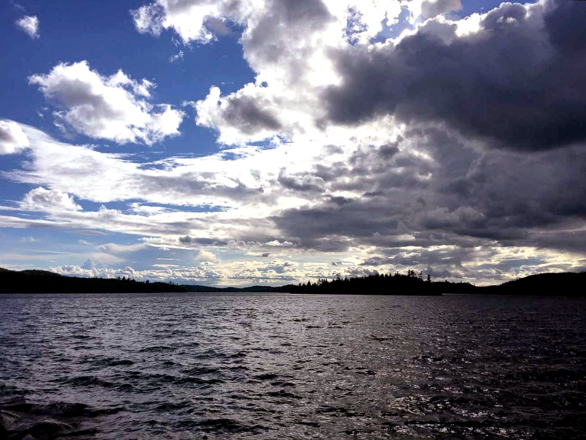
{kind=link}
Choppy water on South Arm Knife Lake
That night we ate sliced potatoes with corn. Then we fished for a while but didn’t catch anything. That night it drizzled as we went to sleep.
Day 4:
The next day, we all woke up late, because it was raining and the sun never came out. We waited for a break in rain to pack up our tents and then set out in our canoes.
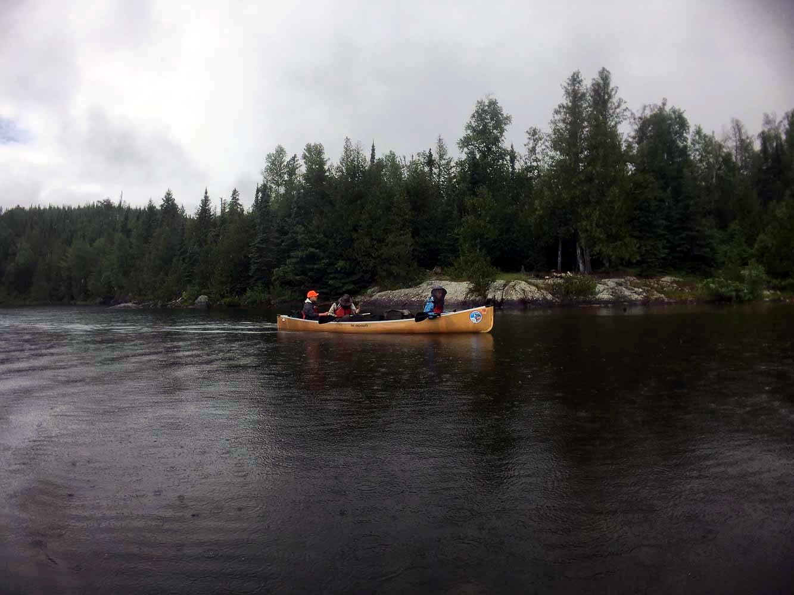
{kind=link}
Setting off in the rain
We paddled in South Arm Knife, portaged to Hanson Lake, then continued to Ester Lake. On Ester Lake we ate a carrot, a beef stick, and a slice of Hudson Bay Bread. Hudson Bay bread is made of oats, sugar, and a lot of butter. Because of all the butter, each small slice can contain a thousand calories! It reminded me of the elvish “lemba” in Lord of the Rings! At that particular campsite, there were lots of dragonflies and no mosquitoes at all as we ate lunch. Perhaps dragonflies eat mosquitoes?

Lunch on Ester Lake
Next, we set out for Ottertrack Lake, which was international water because it was along the border! The Minnesota Border between Lake Superior and Lake of the Woods has a lot of history. As determined in the Webster-Ashburton Treaty of 1842, the border would follow the route taken by the Frenchman Jacques de Noyon in 1688, the first European to ever visit the Boundary Waters. Later, in the 1800’s, the route would become a commonly used fur trader route, the voyageurs of the 19th century. I think our entire crew felt a sort of reverence towards the significance of these lakes, that they formed the boundary between two great countries! That night, we ate rice with chicken and soup. I was really hoping that we could catch a fish to eat for dinner, but we had no such luck. People told us back at home that there was so much fish here that you could just grab one out of the water if you wanted to! Obviously this was an exaggeration, but surely we should have gotten something by now! In the evening it started pouring, but it stopped once it got dark.
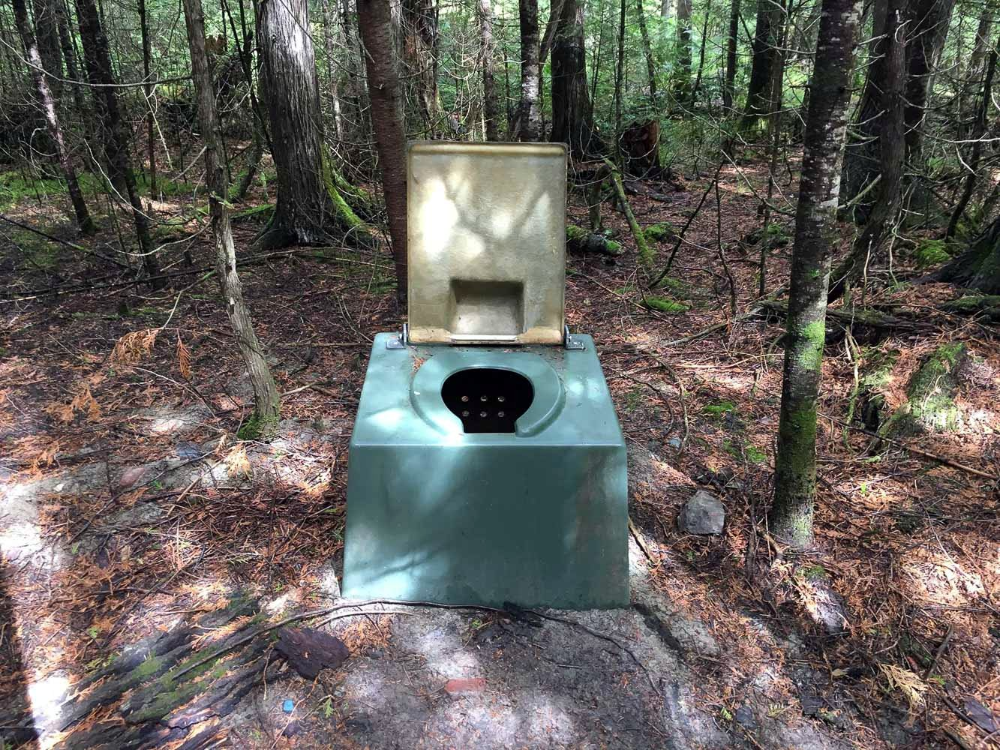
{kind=link}
Thankful for toilet seats
Day 5:
The next morning we woke up to a light drizzle. The plan that day was to paddle down the border and then cut down through the Scenics, making our campsite sometime after we returned to the border lakes. On Ottertrack Lake, there were some very steep cliffs on the Canadian side, probably remainders of the glaciers during the last Ice Age. Most if not all the lakes in the Boundary Waters are glacially formed, which is why there is so little soil and so much exposed bedrock. Apparently, this is the reason Minnesota has very little fertile farmland. A lot of sediment was eroded by the glaciers that covered nearly the entire state, dumping it all out to Iowa.
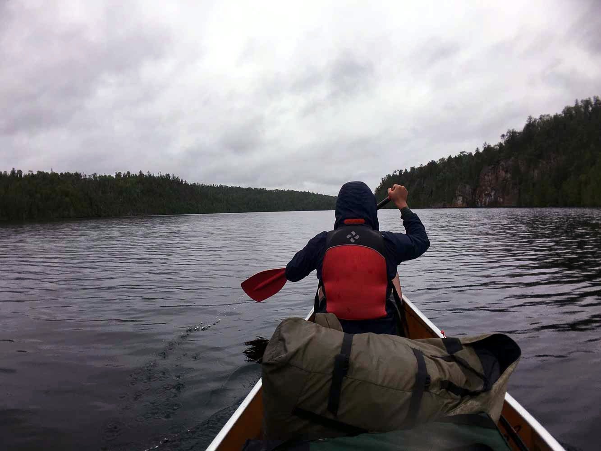
{kind=link}
Ottertrack Lake
On our portage to Gijikiki Lake, I was carrying the canoe up a really steep trail. The entire stretch of trail was very poorly maintained, with some places ankle deep in mud, and others so overgrown that your head five feet above the ground couldn’t even make out the trail beneath your feet. Along the trail I came across this rock that was super slippery, yet it was impossible to step around it. I was forced to step on its downward sloping face, and I slipped onto my bottom. Unfortunately, as I tried to break my fall, I let the canoe crash on top of me. The rim of the canoe hit a sharp rock on the side of the trail, and the aluminum rim (the gunnel) dented. However, that forced a small area of the Kevlar sides of the canoe to buckle, so there was a rather large crack on the canoe. Luckily, it was too high on the canoe to leak any water, but I felt pretty bad about it anyways. (It turned out the boat had some kind of accident policy so nobody had to pay any money, to my relief!) At that point, the portage was so bad I just wanted it to end. It takes a while to really appreciate the feeling you get when you see the tops of the trees begin to clear out after a long portage, telling you that the water is close. Then you see the lake and the portage landing, and you know the end is near.
{kind=link}
{kind=link}
post-fall
{kind=link}
Damage
To our crew’s great disappointment, Gijikiki Lake was not particularly Scenic at all. (“Well, I must say, I hoped for better.” –Voldemort) Unfortunately, the next portage to Rivalry Lake was not any better. It was even more overgrown, but the worst part was the landing. It was basically a bog, and you had to sink in about knee deep in order to get the canoe into the water. One guy in my crew got his shoe stuck in the mud! The worst part about it all was the stench coming from the decomposing organic matter in the mud itself which was practically unbearable. Our interpreter says that when the lakes freeze over the decomposing matter deprives the lake of oxygen, killing all the fish.
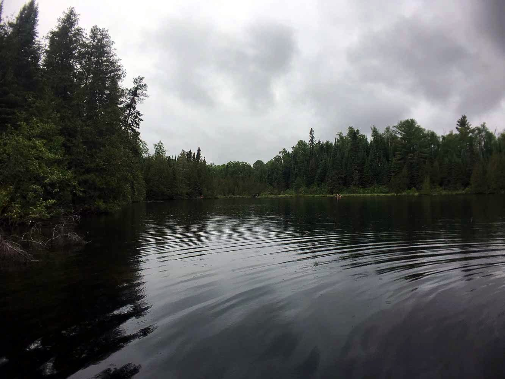
{kind=link}
Rivalry Lake
{kind=link}
Lunar Lake
We were really hoping Lake of the Clouds would be more aesthetic, but it wasn’t much better than Rivalry Lake. Sorely disappointed, we trudged our way through the portage to Cherry Lake. It felt amazing getting to paddle on clear water again, and I think we were all very sick of the mud by that point.
Out of all the lakes we encountered on the trip, I think Cherry Lake was the most beautiful. There were several islands in the middle of the lake, but one island had a quite peculiar shape. It was nearly completely round and shaped like a dome. When I first saw it, it struck me as looking quite like a turtle shell. For lunch we stopped at a campsite with a great view of the lake and the island. I don’t remember what we ate for that lunch, perhaps because I was so engrossed in the aesthetics of the lake. The rain created a kind of misty effect that added a sense of depth to the landscape, sort of like how haze can make faraway mountains look bluer than close mountains.
{kind=link}
Cherry Lake
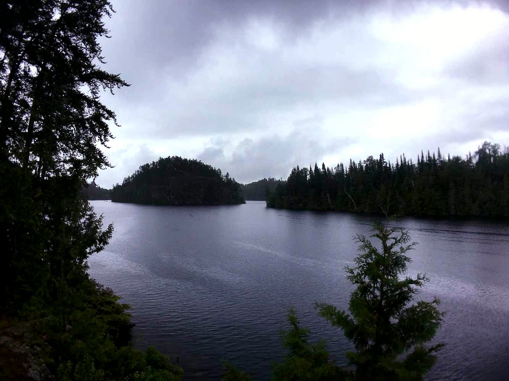
{kind=link}
view from our lunch spot
After lunch, we portaged to Topaz Lake, which was just as beautiful in the rain but perhaps not as visually striking as Cherry Lake. The rain started to really come down on Topaz Lake. It started to get pretty miserable, but we did note that the heavy rain gave the surface of the water a particularly sublime texture. The heavy drops of water splashing the surface made it very uneven, although the lake was otherwise perfectly smooth. I likened its texture to the surface of the sandblasted aluminum on the Macbook Pro, which gives off a cool diffused reflection and in my opinion, very pleasant to touch.
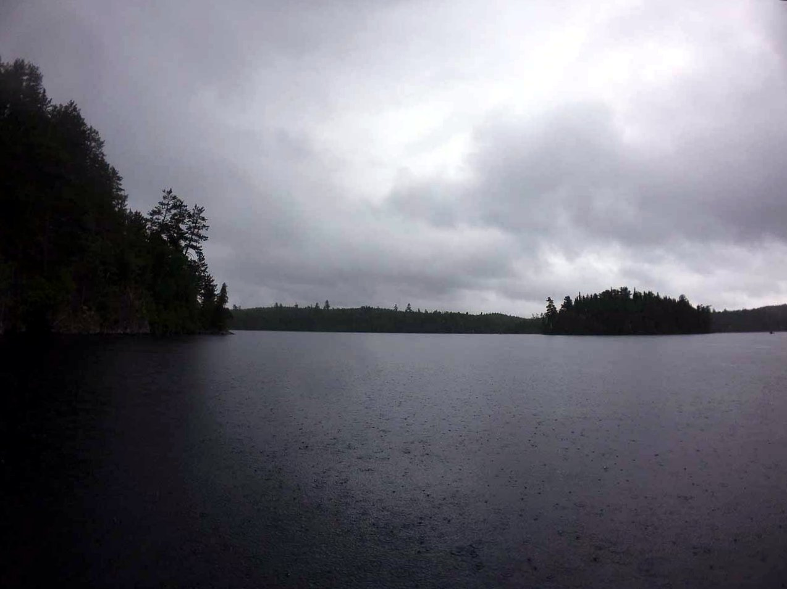
{kind=link}
Topaz Lake
A couple tedious portages later, we were back in international water, this time on Knife Lake. For dinner, we ate pasta and chili and corn bread, which we ate as batter because it was way too cold to merit actually waiting for it to cook. That night it poured, and everybody was completely soaked. I hardly had any dry clothes left, so I had to sleep in my underwear only!
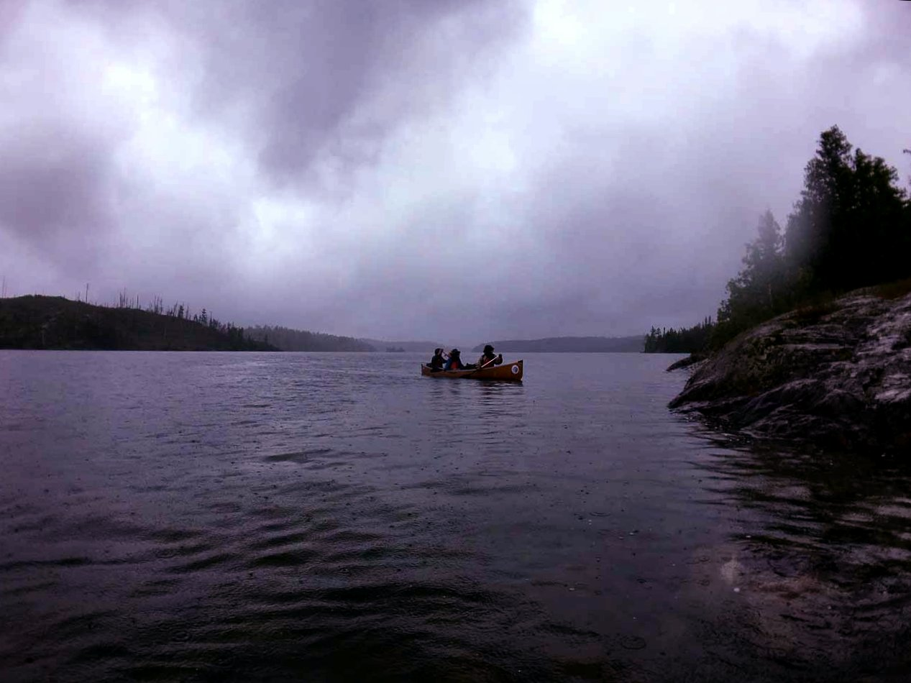
{kind=link}
Day 6:
Thankfully, the next morning, the sun came out for the first time in two days. It seemed like the birds really woke up that morning, since they were all calling as we woke up. In Minnesota, the birds make such a variety of bird calls, ranging from the melodic calls in the early morning to the loud bird calls that echo across the lakes in the evening. For breakfast we ate pita chips with hummus, and then we set off along the border.
{kind=link}
The sun after so many days of rain
Knife Lake is enormous! On the US side, the main body of water is already 10 miles long, and then it extends further into South Arm Knife Lake and countless other arms on the Canadian side. Perhaps it is because of its size that Knife Lake is so incredibly clear. Sitting in the canoe, the rocks underwater look close enough to touch with your paddle, but when you stick your paddle fully down into the water, you realize the lakebed is actually more than 20 feet deep! The water was so clear I was bold enough to drink a couple liters of untreated water. (I had tons of stomach problems after the trip. I don’t think it’s related to this, but I wouldn’t recommend doing this to anybody. But surely life isn’t worth living without some risk?) We paddled 6 or 7 miles on Knife and then we portaged over our first named portage of the trip, Big Knife Portage. It was interesting to think about how fur traders used the same portage trail some 200 years ago. Earlier during the trip, we had a joke about standing on the border and peeing on Canada, but I think I was the only person who actually ended up doing that…
{kind=link}
eating pita chips on knife lake
{kind=link}
Knife Lake
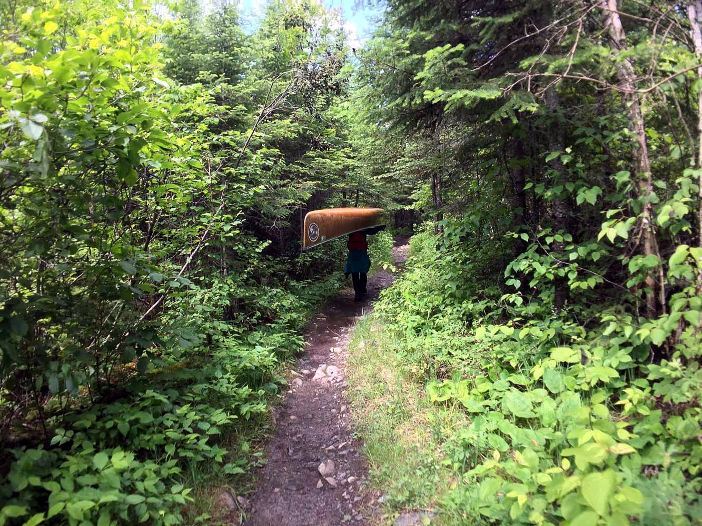
{kind=link}
big knife portage
All the portages we encountered on the border were truly pieces of cake compared with the brutal portages on the Scenics. On one of the small lakes along the border, we saw two loons. According to our guide, each lake up in Minnesota has two loons, one male and female. Each winter they migrate south, and in the spring they always come back to the same lake! They have very distinctive calls that you can hear really clearly even across an entire lake. We tried to get close enough to the loons to get a good look, but they dived below the water before we could get close. We ate our lunch at Birch Lake just as the wind suddenly changed, bringing in a short storm.
{kind=link}
{kind=link}
That night we camped at Sucker Lake, at a particularly strange campsite. All the trees were stinted, apparently due to a windstorm that occurred a couple years ago. Every single tree was tilted in the same angle, and some trees were completely ripped off the ground, exposing the underlying bedrock. Since it was the end of our trip, everybody was in a particularly good spirit, and we were all looking forward to sleeping in tomorrow and getting back to base in the afternoon. We took the opportunity to dry off all our clothes, so we slept dry that night.
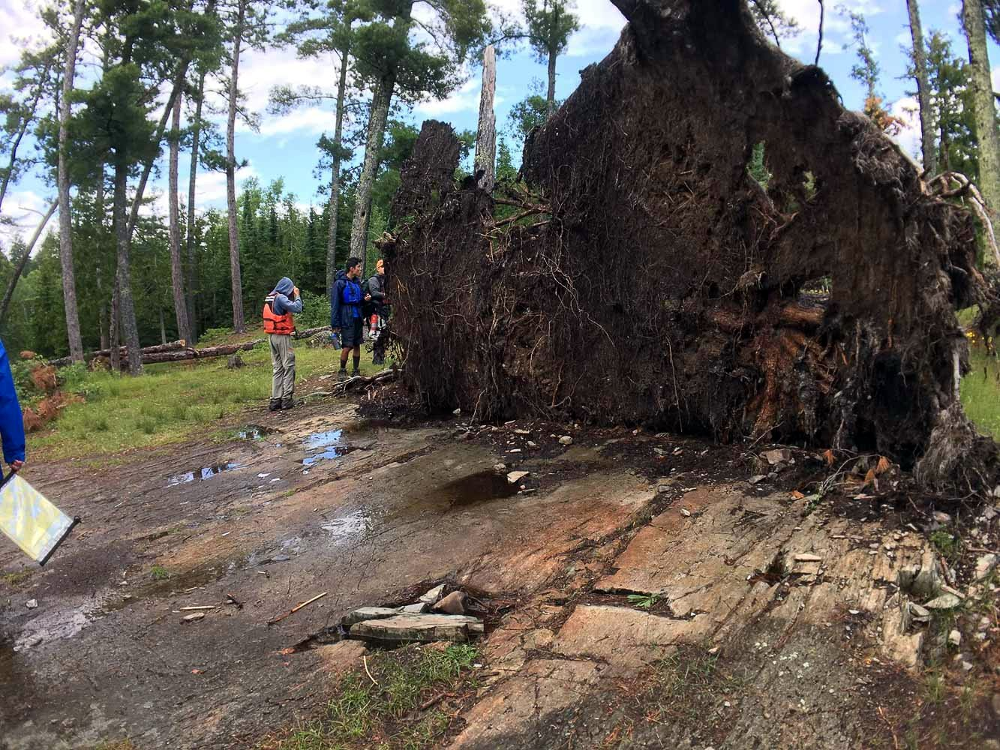
{kind=link}
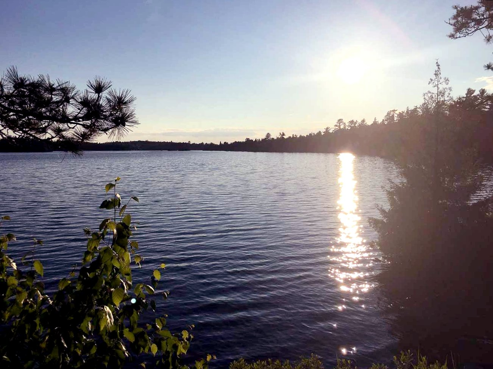
{kind=link}
Day 7:
The next day we all woke up very late and had a filling breakfast. Since we had to get back to base within a slotted time window, we had some time to kill before we had to leave. I suppose we all felt it was kind of strange, knowing that the trip was over. And I mean, that sort of feeling is something you get all the time. It’s the feeling you get when you feel like you just started to get into a rhythm. It’s as if you just got really used to something, and then it ends too soon. I think this sort of feeling is shared after all wilderness experiences. You're happy it's over, but you always feel like you left something behind. I guess that's what keeps us coming back, yeah?
{kind=link}
Moose Lake sunset